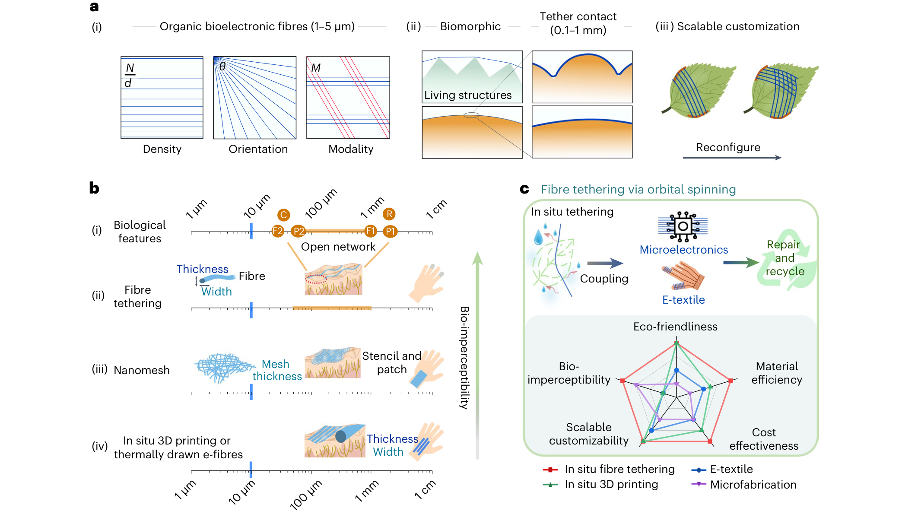
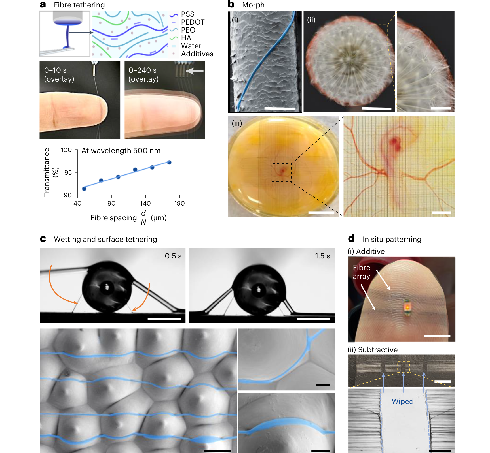
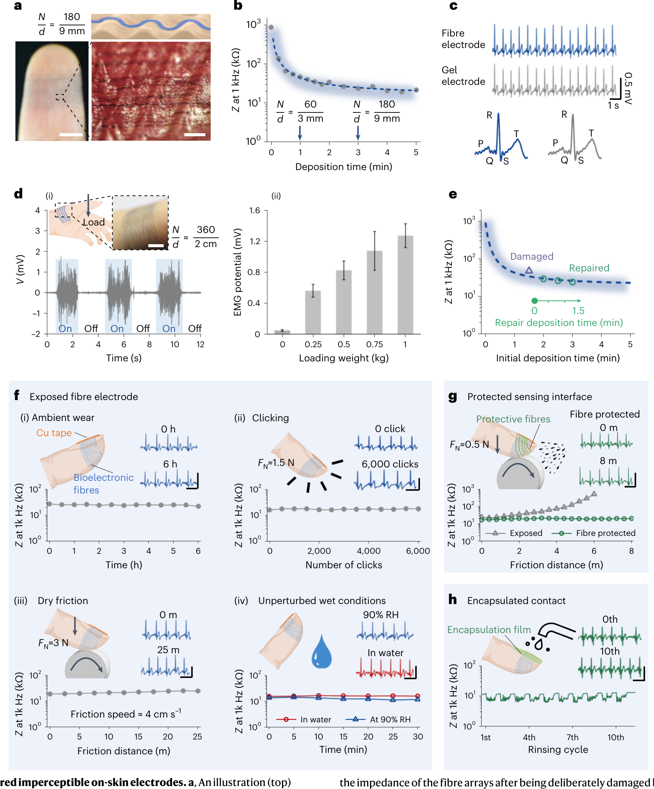
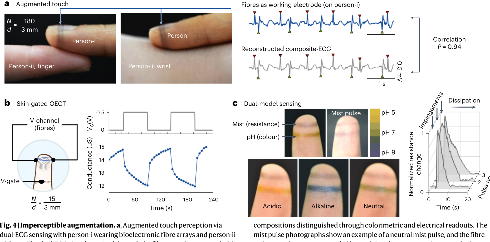

FIG. 1
先定义“无感增强”不是更薄，而是不遮挡活体功能
第一图不是结果图，而是设计坐标系：活体表面有汗孔、指纹、细胞和触觉感受野；电子界面如果用连续薄膜覆盖，即使很薄，也可能遮挡这些功能。

这篇论文的关键不是把柔性电子再做薄一点，而是改掉“先做完整器件再贴到活体上”的范式。作者用轨道式拉丝沉积（orbital spinning）在皮肤、鸡胚和植物表面原位系附 PEDOT:PSS 基有机生物电子纤维，让电子功能以开放网络的方式进入活体表面，同时尽量保留触觉、透气、微地形和宿主形变。
证据边界：本页基于本地正式 PDF 与主文 Fig. 1-5 重新解读；公开页面只使用衍生图体裁图和中文解释，不上传原始 publisher PDF。本文展示的是短期、概念验证和实验室场景，不等同于长期植入、成熟医疗器械或农业传感产品。
作者把 PEDOT:PSS/透明质酸/PEO 水相墨水通过轨道式拉丝原位变成 1-5 μm 的导电微纤维，并直接系附到活体表面，形成无连续基底的开放电子网络。这个网络可以做心电/肌电（ECG/EMG）皮肤电极、皮肤门控 OECT（skin-gated OECT）、水雾/pH 触觉增强、植物叶片 LED 警示和可擦除重构互连。
这篇的范式转移是：电子界面不再是一张预制薄膜，而是一组在目标表面生成的导电纤维。活体表面不只是“待贴合对象”，还成为制造模板；纤维密度决定覆盖和透明度，纤维方向决定拓扑和受力路径，材料模态决定电极、OECT 沟道、pH 颜色纤维或互连功能。
第一图不是结果图，而是设计坐标系：活体表面有汗孔、指纹、细胞和触觉感受野；电子界面如果用连续薄膜覆盖，即使很薄，也可能遮挡这些功能。

轨道式拉丝沉积（orbital spinning）的价值在于不需要先获得目标表面的数字复制，也不需要掩膜和转移。旋转臂每绕一圈，就从黏弹性水相液滴中拉出一根纤维并绕目标物体沉积。

这一图回答最实际的问题：没有连续凝胶层和塑料基底，纤维网络是否还能形成足够低阻抗、足够稳定的皮肤电接触。

如果只是一个薄电极，Fig. 3 已经够了；Fig. 4 才显示这篇的界面拓扑优势。纤维两面都暴露，佩戴者、另一个人、皮肤电解质和水雾环境都能与同一开放网络发生电接触。

最后一图把纤维从皮肤电极扩展成系统互连：它可以按方向连接 LED，可以在叶片上做环境警示，也可以擦除、覆盖、重写和回收。
这篇可以在组会上这样收束：作者没有证明一种万能可穿戴产品，而是证明“活体表面的电子功能可以被现场织入、局部维护和生命周期拆解”。这才是它比普通柔性贴片更有想象力的地方。
← 返回论文细读书架